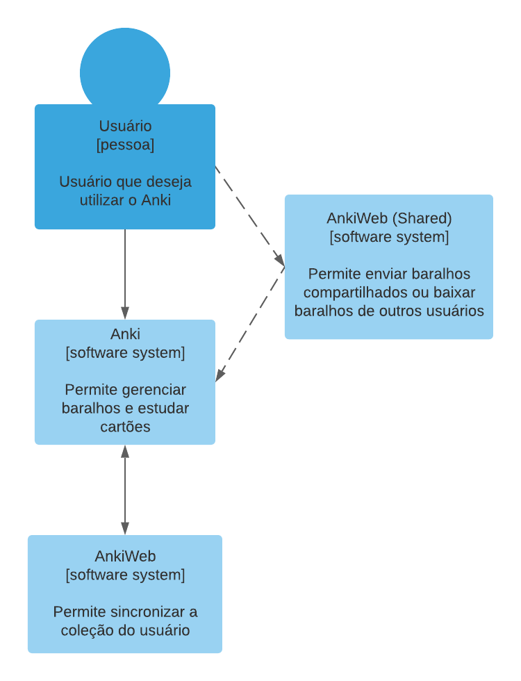

Documentação arquitetural - Anki
Autor
Este documento foi produzido por Igor Seabra.
- Matrícula: 117210304
- Contato: igor.seabra@ccc.ufcg.edu.br
- Projeto documentado: https://github.com/ankitects/anki
Descrição arquitetural – Anki

(Imagem: Alex Fraser/Anki)
Este documento descreve a arquitetura do aplicativo Anki. Essa descrição foi baseada principalmente no modelo C4.
Sobre o Anki
Anki é um serviço open source e gratuito para auxiliar na memorização de conteúdos de forma eficiente, automática e customizável.
Ele permite ao usuário estudar cartões (compostos geralmente por uma pergunta na frente e sua resposta no verso) através de um sistema de repetição espaçada, ou seja, mostrando os cartões novamente em intervalos de tempo baseados no quão bem o usuário sabe o conteúdo daquele cartão. Os cartões podem possuir texto, imagens, áudio e vídeo, permitindo que o Anki seja usado para estudar praticamente qualquer tipo de conteúdo, como idiomas, conteúdo acadêmico ou artístico.
Os usuários podem criar seus próprios baralhos com qualquer conteúdo nos cartões ou usar baralhos prontos criados por outros usuários, disponíveis na plataforma AnkiWeb.
O Serviço de monitoramento do twitter
Objetivo Geral
Disponibilizar um serviço para aprendizagem através de repetição espaçada.
Objetivos Específicos
- Promoção de um serviço de repetição espaçada com cartões que automatiza e abstrai do usuário o que for possível, para que ele foque no estudo dos cartões.
- Flexibilidade na customização da apresentação dos cartões (como apresentação de cartões novos e intervalos de repetições)
- Formatação dos cartões com diversos tipos de mídia, como texto, imagens, áudio e vídeo
- Disponibilizade do serviço em plataforma web e aplicativos para Windows, Linux, Mac OS X, Android e iOS
- Acesso do estado mais recente da coleção do usuário em qualquer dispositivo, através da sincronização com o servidor
- Visualização de métricas de utilização, como índice de acertos, previsão de revisões, dificuldade dos cartões e tempo necessário para estudo
- Biblioteca de baralhos disponíveis para uso construída pela comunidade no serviço AnkiWeb
- Extensão da funcionalidade através de add-ons que podem ser desenvolvidos e instalados pelo usuário
Contexto

- Usuário: O usuário deseja usar o Anki para criar e estudar baralhos com os cartões que contém as informações. Para isso, ele interage com a interface principal do Anki e com o AnkiWeb (Shared).
- Anki: Na interface principal, o usuário pode ver seus baralhos, adicionar, editar ou estudar cartões, ver informações estatísticas e editar configurações. O Anki sincroniza todo seu estado com o AnkiWeb.
- AnkiWeb: No servidor AnkiWeb, ficam armazenados os dados e baralhos dos usuários. O Anki sincroniza os dados com o AnkiWeb para que o usuário não os perca e possa acessá-los de qualquer dispositivo.
- AnkiWeb (Shared): Essa é a plataforma na web na qual o usuário pode pesquisar e baixar baralhos feitos por outros usuários e fazer upload de seus baralhos para a plataforma pública.
Containers

- Versões da interface do Anki: O Anki está disponível em diversas plataformas.
- Anki (Windows, Linux, Mac OS X): versões do aplicativo desktop do Anki. Possuem todas as funcionalidades.
- AnkiWeb (Decks): aplicativo do Anki no navegador. Permite apenas adicionar e editar notas e estudar baralhos, sem componentes como gerenciador de configurações, editor de tipos de nota, visualização de métricas de utilização e add-ons (mais informações abaixo).
- AnkiMobile: aplicativo do Anki para iOS. Possui todas as funcionalidades da versão desktop, exceto add-ons. Com o objetivo de apoiar a equipe de desenolvimento, é a única versão paga do Anki.
- AnkiDroid: aplicativo do Anki para Android. Possui todas as funcionalidades da versão desktop, exceto add-ons.
- Add-ons: o usuário pode buscar add-ons desenvolvidos pela comunidade que complementam a funcionalidade do Anki. Os add-ons são visualizados através do AnkiWeb (Shared), mas o próprio aplicativo do Anki se encarrega de baixar e instalar. Exemplos de add-ons: dicionário embutido, assistente de foco, edição de cartões em massa, leitor de tela.
- Banco de Dados SQLite: um banco de dados completo é criado para armazenar a coleção de cada usuário. Cada instalação local do aplicativo do Anki, além do próprio servidor AnkiWeb, possui uma cópia do banco. As mudanças são sincronizadas com o AnkiWeb automaticamente pelo aplicativo ao início e final de cada sessão ou a pedido do usuário. O Anki resolve conflitos automaticamente, mas algumas mudanças, como a adição de um estilo novo de cartão, requerem que a cópia do banco no AnkiWeb seja apagada e substituída completamente.
Obs.: o usuário que deseja usar o serviço do Anki em um dispositivo iOS sem comprar o aplicativo pode fazer isso através do AnkiWeb (Decks) no navegador, mas precisará de acesso ao aplicativo em outro dispositivo, pois o aplicativo no navegador não possui todas as funções necessárias.
Componentes

Obs.: os componentes com contorno em vermelho não estão disponíveis na plataforma AnkiWeb (Decks) no navegador, apenas nos aplicativos para desktop e celular.
Há uma relação próxima entre os gerenciadores de configurações, baralhos, tipos de cartões, notas e cartões:
- Uma configuração é um conjunto de parâmetros que define quantos cartões novos serão mostrados por dia, o fator de multiplicação para o tempo em que o cartão será mostrado novamente de acordo com a resposta, a quantidade diária máxima de revisões etc. Pode ser criado qualquer número de configurações e uma configuração pode ser usada por qualquer quantidade de baralhos.
- Um tipo de nota é um esquema que define quais campos uma nota terá. O padrão são dois campos (frente e verso), mas podem ser adicionados mais tipos com outros campos (como mídia e informações adicionais). Um tipo de nota possui um ou mais tipos de cartão. O tipo padrão possui o campo da frente na frente e o campo do verso no verso, mas isso pode ser customizado (e deve, caso campos além da frente e verso sejam adicionados). Os cartões são escritos em HTML.
- Uma nota é uma instância de um tipo de nota, com as informações a serem inseridas nos campos daquele tipo. Uma nota representa uma quantidade de cartões igual à quantidade de tipos de cartão naquele tipo de nota.
- Um baralho é um conjunto de notas. As notas de um baralho não precisam ser todas do mesmo tipo. O conjunto de cartões de um baralho é a união dos cartões de cada nota. Permitir ao usuário estudar os cartões de um baralho é o principal objetivo do Anki.
O Anki já vem com alguns tipos de nota padrão, para que não seja necessário que o usuário saiba gerenciá-los ou precise criar as formatações para os cartões em HTML.
Código
Nesta etapa não faremos diagramas que apresentam detalhes da implementação. Faremos isso mais adiante.
Visão de Informação

Obs.: no diagrama de informação, as setas e contornos pontilhados roxos indicam que aquele fluxo ou etapa é opcional.
O objetivo do usuário do Anki é estudar seus baralhos; para isso, ele precisa criá-los, tendo a opção de buscar um pronto no AnkiWeb (Shared) ou criar um novo, seguindo o fluxo de informação indicado. Já tendo baralhos com cartões, o usuário sincroniza sua coleção com o AnkiWeb antes e depois de estudá-los.